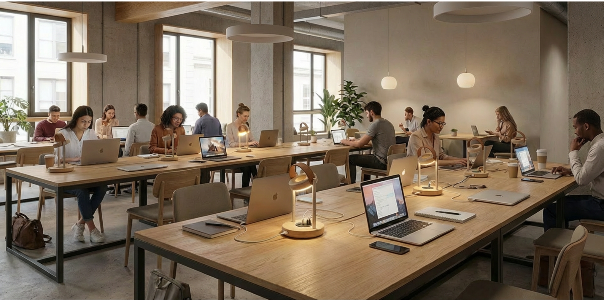
LIGHTING CONCEPT · esPattio — 2025
Candela
Overview
Candela was conceived as a lighting family rooted in warmth, tactility and calm presence. The intention was not only to design a single lamp, but to define a shared visual and constructive language that could extend naturally across a broader collection.

Context and atmosphere
The project draws from Mediterranean domesticity: soft light, simple gestures, natural textures and a quiet sense of everyday ritual. Rather than nostalgia, the goal was a contemporary warmth with clear proportions and restrained detail.
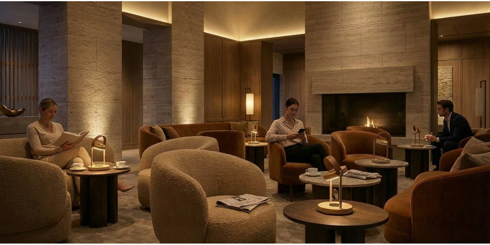
Typology and system
One of the core ambitions of Candela was to behave as a family rather than a collection of isolated objects. Shared geometry, repeated proportions and a consistent detail hierarchy allow the system to adapt to table, wall and suspended versions while preserving a recognizable identity.
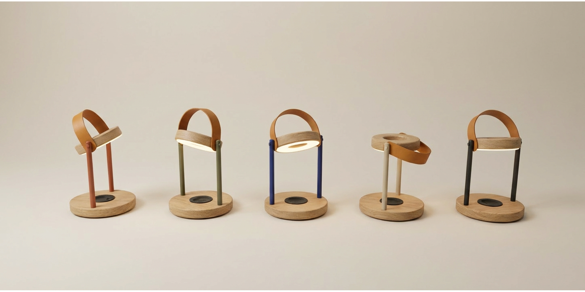
Detail language
The refinement focused on the pieces that make the object feel believable: how materials meet, how edges resolve, how the leather element behaves, and how hardware can become part of the character instead of visual noise. These details are what give Candela its quiet precision.
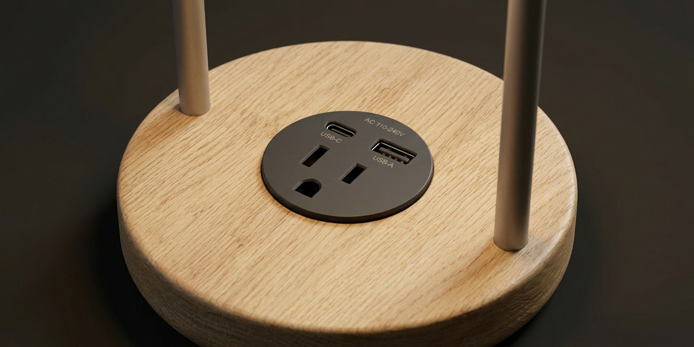
Material and interaction
Wood, leather and metal were considered not just as finishes, but as part of the experience of use. The project also explores functional details such as integrated charging, turning utility into something discreet and spatially coherent.
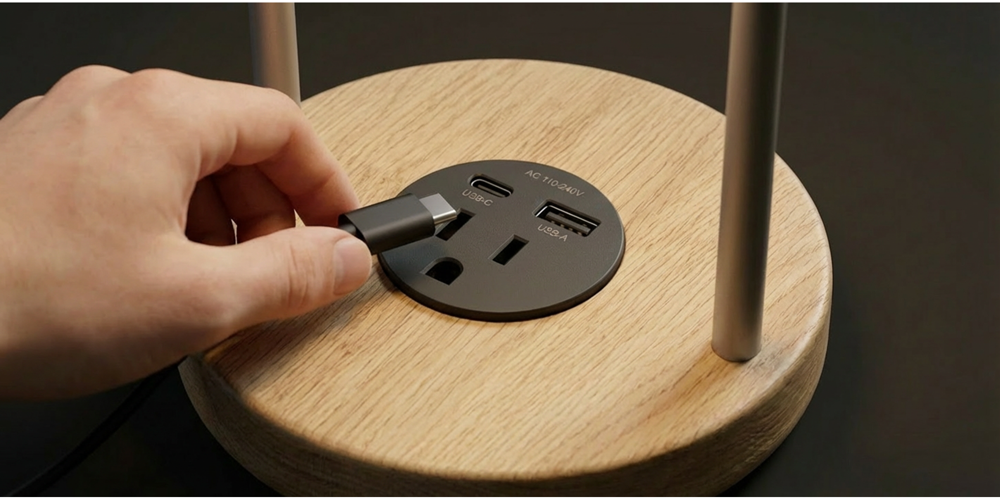
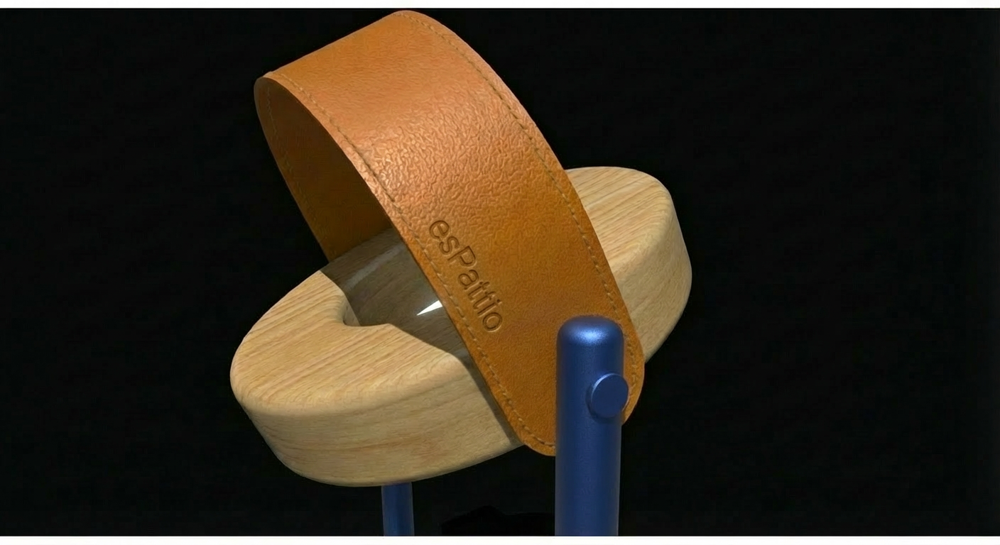

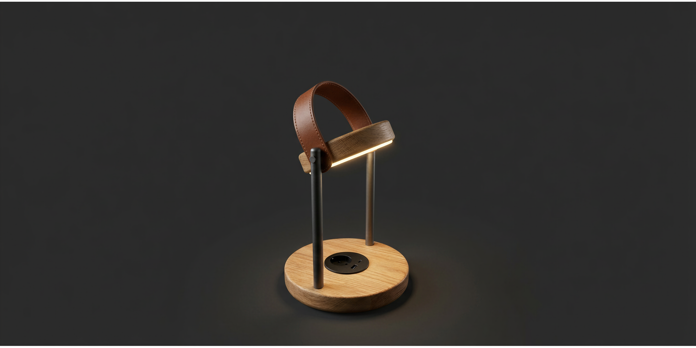
In context
Beyond the object itself, the presentation set tested how Candela behaves in interior scenarios: libraries, lobbies and coworking environments. This helped validate both atmosphere and relevance, showing the family as part of a lived space rather than as an isolated render exercise.
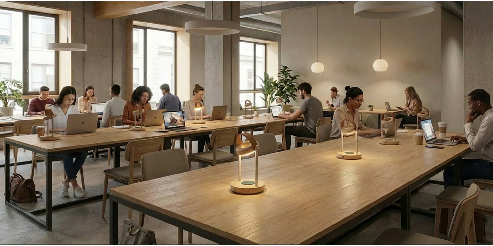
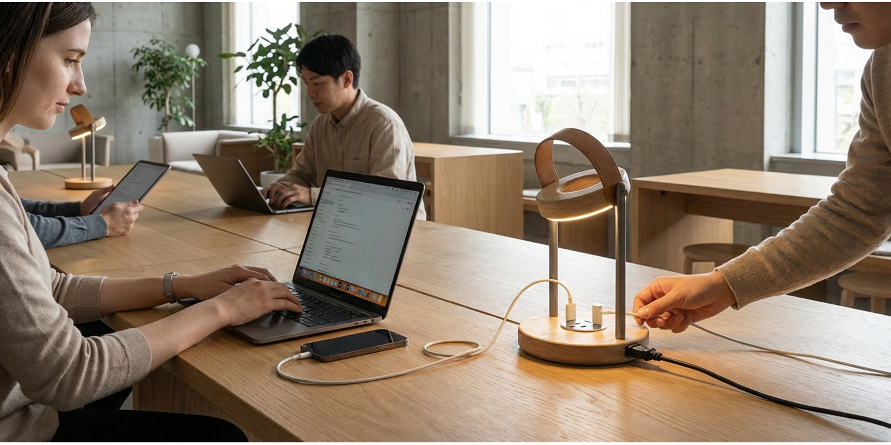
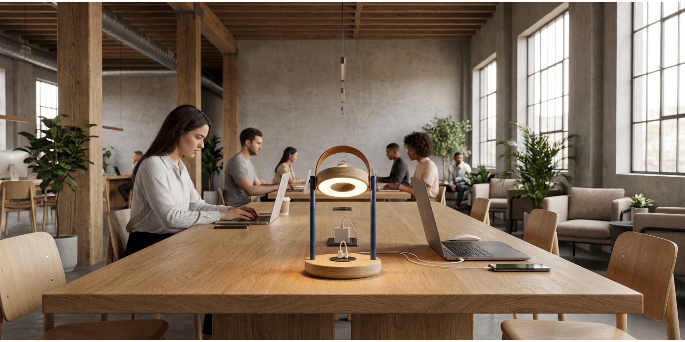
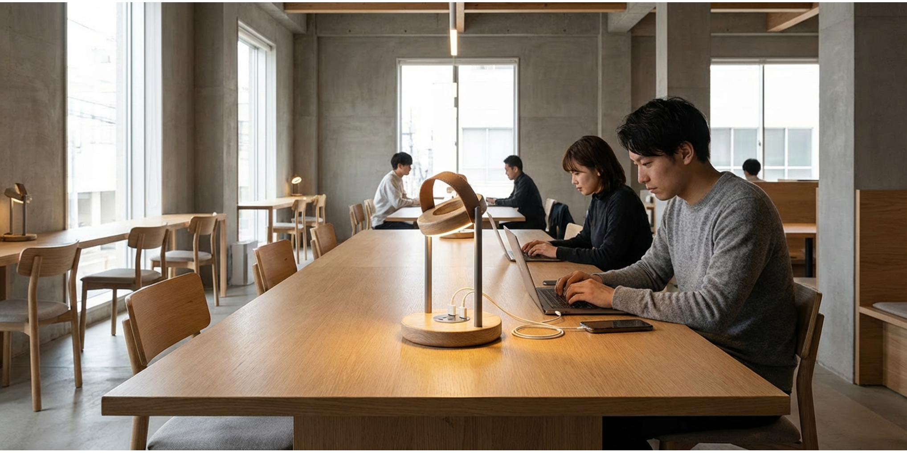
Gallery
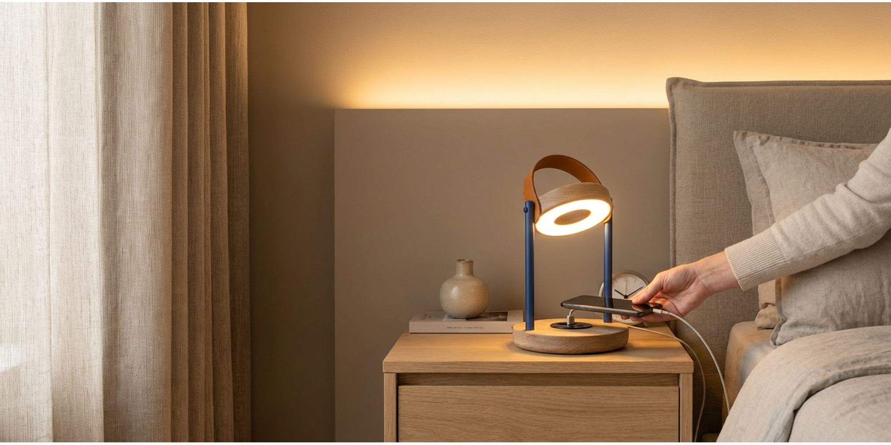
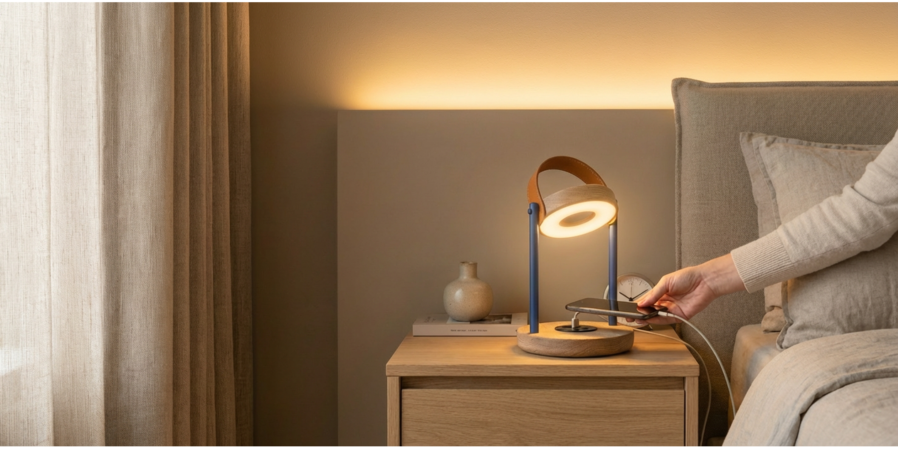
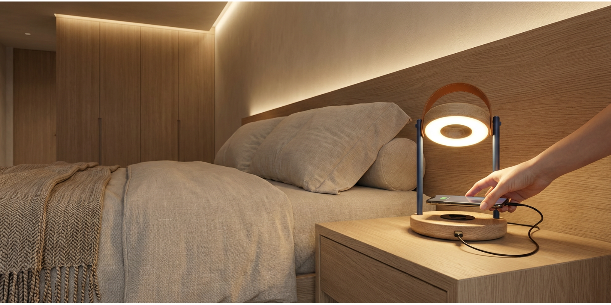
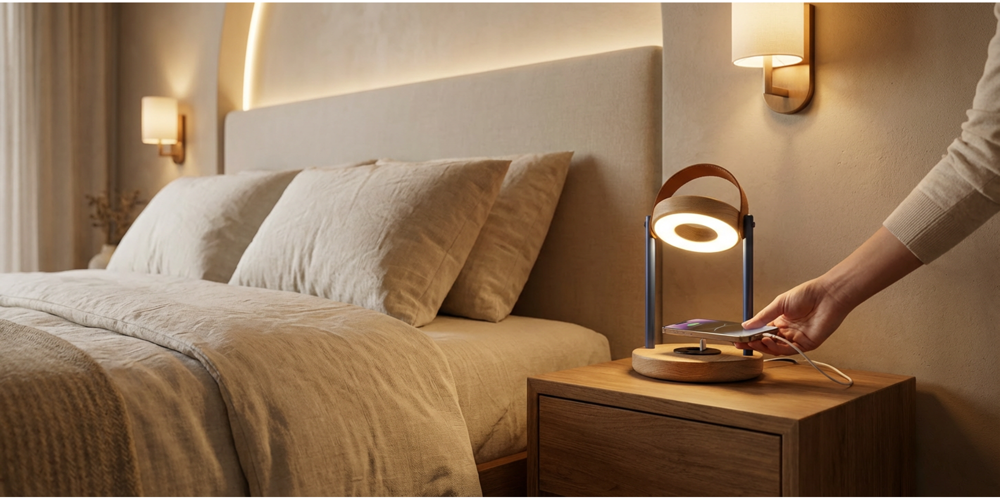